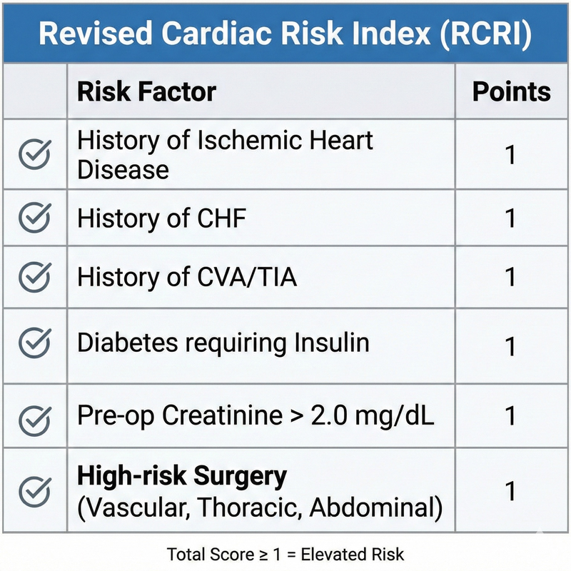

การส่งตรวจ Pre-op ตาม AHA/ACC 2024 (สำหรับการผ่าตัดที่ไม่ใช่หัวใจ)
- ECG: ไม่แนะนำใน Low risk surgery / แนะนำในผู้ป่วยที่มีโรคหัวใจ หรือมีอาการเหนื่อยเจ็บหน้าอก
- Lab (BNP/Troponin): พิจารณาเจาะในผู้ป่วยอายุ > 65 ปี หรือมี RCRI >= 1 ที่จะผ่าตัดความเสี่ยงสูง (Elevated Risk)
